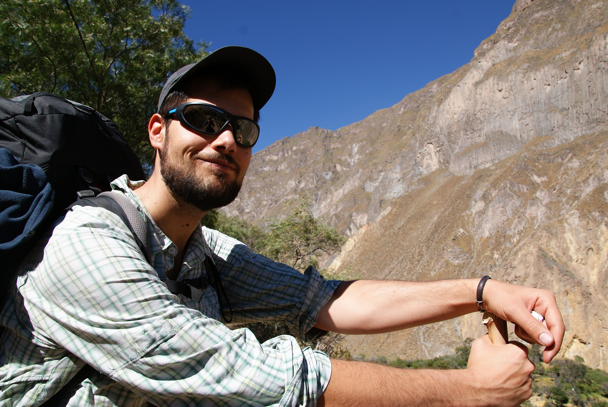
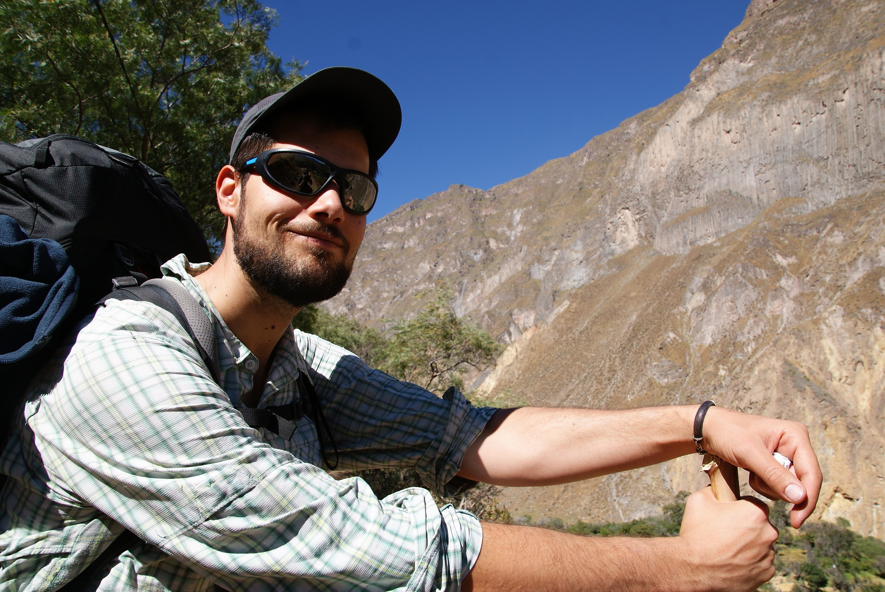

Arequipa et le canyon de Colca
Entre colonisation et nature époustoufflante
Arequipa
On arrive donc à Arequipa, ville coloniale par excellence. La première caractéristique de la ville (outre d'être la deuxième plus grande du Pérou), est d'avoir son centre historique consruite avec des pierres volcaniques naturellement blanche. Ce qui donne une ville blanche. Bon du coup c'est pas de la peinture blanche non plus, mais bon ça donne un charme certain. Surtout que beaucoup de batiments construits par les espagnoles, sont de style colonial avec de grands patios centraux. C'est vraiment agréable.
Après ça, la ville ne manque pas d'histoire. Malheureusement la visite des monuments est assez cher, on a donc pas pu tout faire. On s'est quand même autorisé le couvent Santa Catalina (le plus cher, héhé). C'esdt carrément tout un quartier au milieu de la ville. Et franchement, comme dit sur internet ou autres guides, la visite vaut vraiment le coût. Cela représente une histoire importante de la ville, et c'est impressionnant de voir l'étendu du domaine et toutes les habitations particulières des nonnes. Il faut dire que c'était, pendant une période, un couvent plutôt de riche, où l'on pouvait venir avec une ou plusieurs servantes, et donc avoir une habitation privée moyennant finances. Ce fût d'ailleurs sujet à de vives critiques. Mais l'histoire de ce couvent ne se résume pas à ça, bien entendu. Il est aussi très joli et agréable à visiter. Donc je recommande si vous passez dans le coin.
Arequipa est aussi une ville connue pour sa gastronomie. Malheureusement, en y étant restés que peu de temps, on a pas vraiment pu découvrir tout son potentiel, mais beaucoup de gens, dont des péruviens, nous ont confirmé cela. Arequipa est une ville de gastronoimie, pour tous les goûts et tous les budgets (mais plus ceux qui ont de l'argent, quand même). Mais comme on a traîner plus que prévu à Llachon (mais pour de bonnes raisons), on doit passer à autre chose, c'est à dire : le canyon de Colca.
Le canyon de Colca
Le canyon de Colca, c'est déja le deuxième plus grand canyon du monde. Il n'a d'ailleurs perdu le titre de premier qu'assez récemment. Bon autant vous dire que ça fait du gros trou !
Ensuite, c'est un trek à faire sur 2 ou 3 jours, mais genre en mode détente. Les tours classiques ne comportent que 4 à 5 heures de marche par jours et surtout, il y a des eaux "thermales" naturellement chaude aux différents points de chute. Ce qui est trèèèès agréable après une petite randonnée pour délaisser nos petites gambettes (tout de même un peu fatiguées).
On décide aussi de partir sans la tente, l'offre de logement étant suffisante et économique. On partira également avec seulement de quoi faire nos pique-nique, et on achètera nos autres repas dans les hôtels qui proposent souvent quelques plats. Histoire de se ballader un peu léger, pour une fois.
Jour 1 : La descente à Lahuar
Quand on dit descente, c'est 1000m de dénivelé négatif à descendre pendant 4 heures. Cela pourrait être dur pour les genoux, mais du coup c'est pas trop pentu et nos genoux (les miens surtout qui peuvent faire défaut) ont bien tenu. Du coup oui en arrivant, on était quand même contents que ça se finisse, et les eaux thermales ont bien aidées à nous délasser. On y a d'ailleurs rencontrer 2 français, Laura et Guillaume, avec qui on a sympathisé et qu'on retrouvera ensuite pour un moment très... français à Cusco (je n'en dis pas plus). Que dire si ce n'est que ce canyon est très impressionnant et joli. Bien sûr, entre le haut du canyon et le bas, on passe par différente végétation et environnement. Pour finir dans un endroit encaissé proche de la rivière. On prendra une chambre, assez sommaire dans un hôtel.
On aura aussi la visite d'un petit scorpion. Même si les locaux nous ont assurés qu'ils étaient inoffensifs (et que y'en avait plein, de toute façon), cela n'a pas beaucoup rassuré Maïlys. Et je peux vous dire qu'on a vérifié nos chaussures le lendemain matin avant de les enfiler.
Jour 2 : La traversée du canyon jusqu'à San Juan de Chuccho
Le deuxième jour c'est plus tranquille. On doit marcher 5 heures, mais avec peu de dénivelé. Même si certains chemins possibles montent un peu sur les hauteurs, on décide de rester sur le chemin classique. Il y a peu à dire en réalité, on traverse le canyon simplement le canyon. Le versant en face de nous, par lequel on est censé remonter est impressionant et on a du mal à comprendre comment on va faire sans se lancer dans de l'escalade.
On arrive en début d'après-midi à notre point de chute, et on passera l'après-midi à se détendre en compagnie d'autres randonneurs.
Jour 3 : La remontée à Cabanaconde
Là on a un timing serré. On a un bus à prendre à 11h30 à Cabanaconde, et 4 heures de montée annoncées. Et comme je l'ai dit, on flippe un peu. On ne comprend pas comment ça passe, donc on décide de prendre un peu de largeur. Ca veut dire levé à 5h, départ à 6h. Et c'est parti ! et je peux vous dire que ça monte ! On devra marcher pas loin de 4h15 (le gérant de l'hôtel nous a annoncé que les locaux le faisaient en 2h30...on y est pas !). Mais c'était magnifique. Les formations rocheuses sur ce versant sont incroyables, comme des tubes d'orgue, affleurant la paroi. Il y a même un passage où on se retrouve à les longer de très prêt, avec le sentiments qu'ils peuvent nous tomber dessus à tout moment. Les épées de Damoclès des randonneurs. Et j'ai même eu l'impression, sur un passage, de gravir un mont pour atteindre le Mordor.
Heureusement la fin du chemin est plus doux en longeant de nouveau le canyon vers Cabanaconde. On arrive à destination avec un timing nickel, juste le temps de refaire nos sacs, prendre une douche, et aller chercher notre bus...qui a eu un incident technique et donc ne passera pas. Du coup en aventuriers aguérris, on trouve une solution de secours, et nous voilà repartis pour Arequipa.
En route pour Cusco
Du coup on rentre vers Arequipa, 6h de bus. De là on fera un tour en ville pour se prendre une petite colation et patienter, pour prendre notre bus de nuît pour Cusco, 8h de bus. Ca fait de la route quand même !


 

 <\div>
<\div>